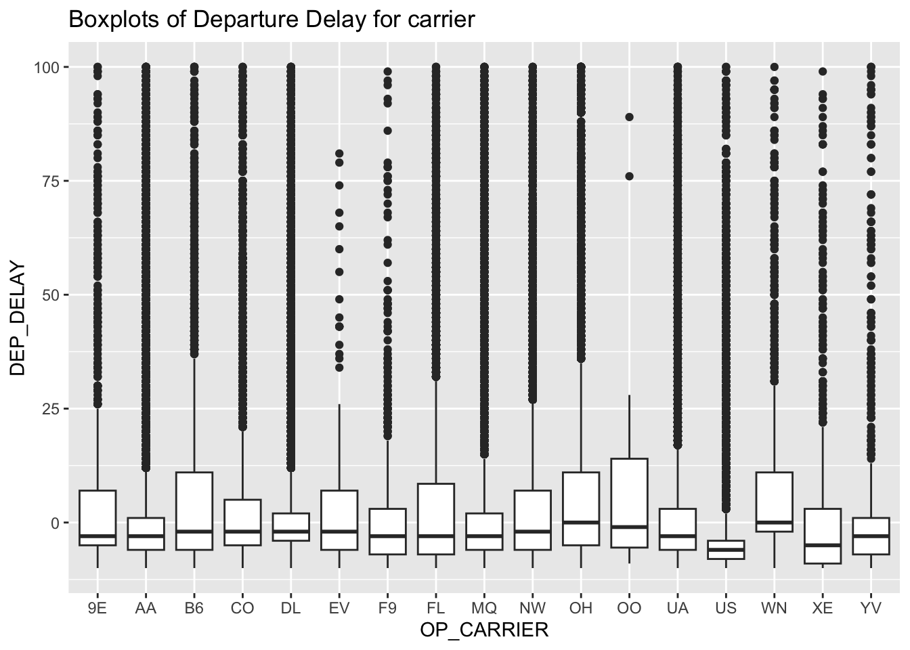
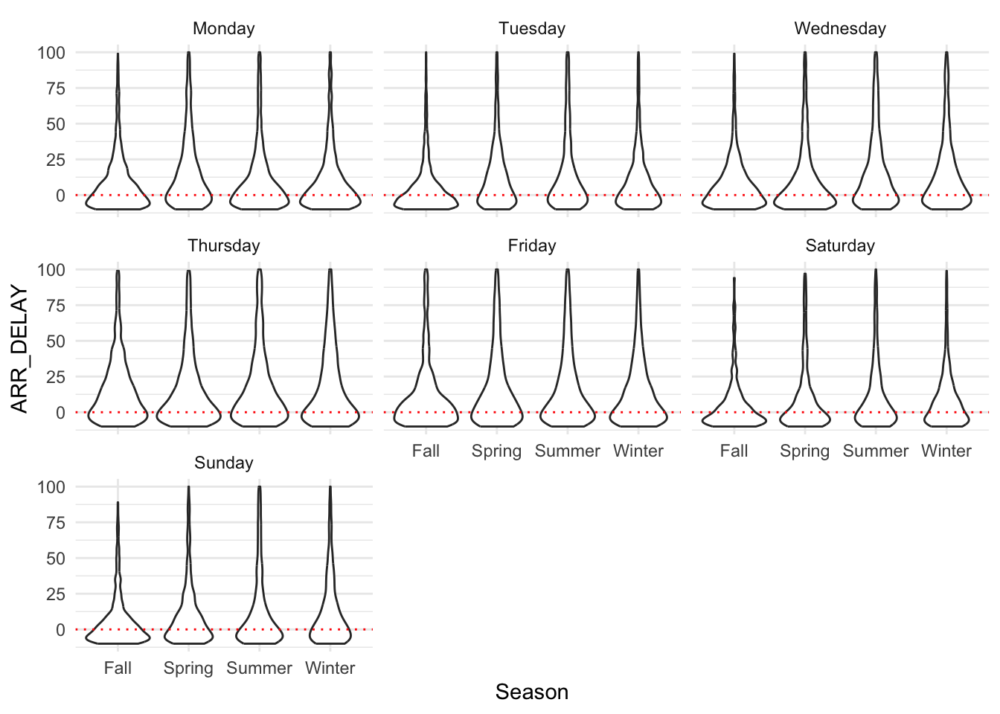
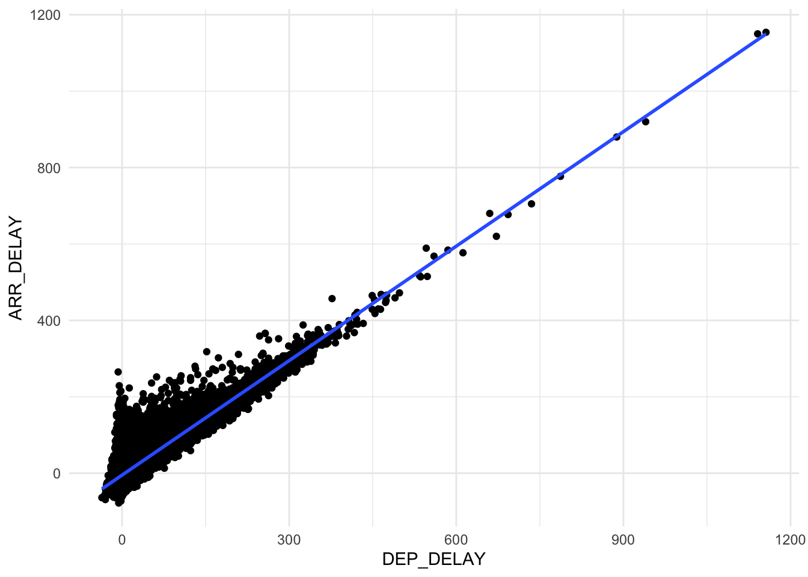
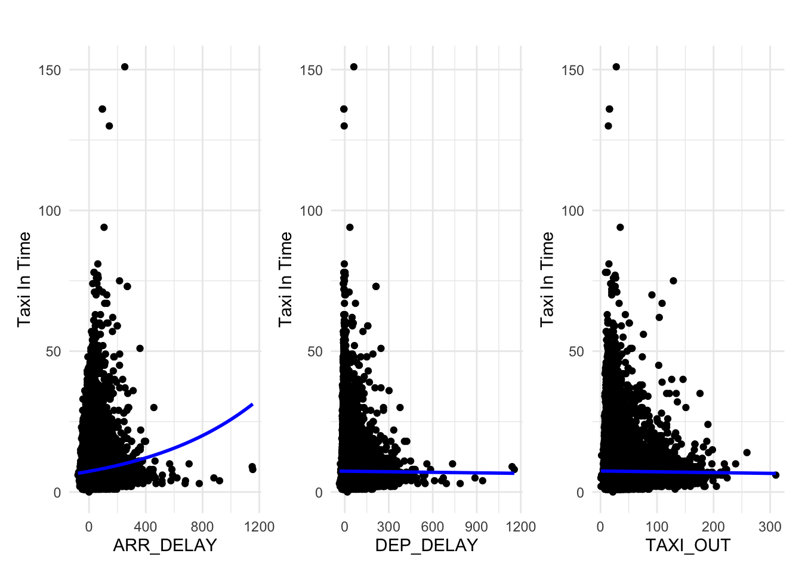
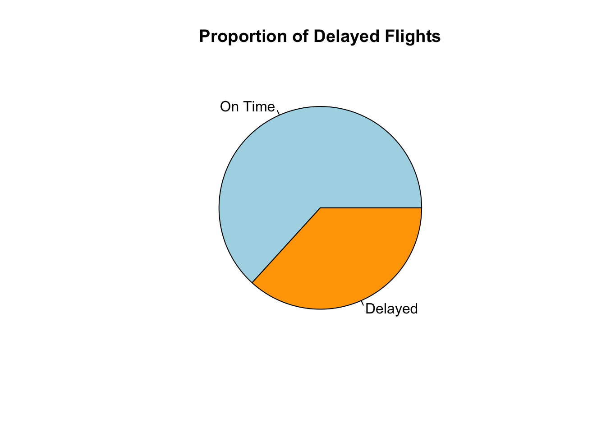
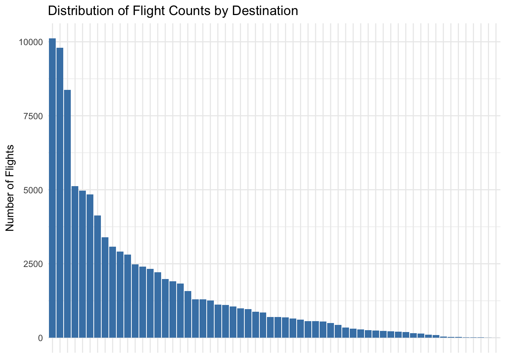

planes %>%ggplot(aes(x = CRS_DEP_TIME, y = DEP_TIME)) +geom_point() +theme_minimal()

This plot shows the planned departure time on the x axis and the actual departure time an the y axis. Points on the diagonal departed on time. On the bottom right of the plot we see a few cases of flights that have a delay and depart on the next day early morning. This should be considered when using DEP_TIME in a statistical model. Since flights before 5 am are systematic different from flights after 5 am since these flights were planned to depart the day before.
Arrival Delay are similar across the weekdays and season. On weekends the median of arrival delay seems to be a bit lower. The violin plot give us a feeling of how skewed arrival delay is and how different the median and average are. Other variables in this data set are similarly skewed, therefore modeling the average may not represent the biggest part of the data. We will later see if we can handle this skewness.
Show the code
planes %>% dplyr::select(DEP_DELAY,ARR_DELAY,CRS_DEP_TIME,WHEELS_OFF,WHEELS_ON, DISTANCE,ACTUAL_ELAPSED_TIME, TAXI_OUT, TAXI_IN ) %>%cor(use ="complete.obs") %>%kable(caption ="Correlation matrix of different variables")
Correlation matrix of different variables
DEP_DELAY
ARR_DELAY
CRS_DEP_TIME
WHEELS_OFF
WHEELS_ON
DISTANCE
ACTUAL_ELAPSED_TIME
TAXI_OUT
TAXI_IN
DEP_DELAY
1.0000000
0.8879422
0.1780300
0.2329716
0.0879676
0.0530508
0.0608624
0.0540390
-0.0049062
ARR_DELAY
0.8879422
1.0000000
0.1449869
0.2149834
0.0900263
0.0343948
0.1903733
0.4001428
0.0866103
CRS_DEP_TIME
0.1780300
0.1449869
1.0000000
0.9710676
0.8135008
-0.0707239
-0.0456351
0.1120957
-0.0622022
WHEELS_OFF
0.2329716
0.2149834
0.9710676
1.0000000
0.8279598
-0.0603341
-0.0160242
0.1730932
-0.0561931
WHEELS_ON
0.0879676
0.0900263
0.8135008
0.8279598
1.0000000
0.0066490
0.0596126
0.1755272
-0.0181294
DISTANCE
0.0530508
0.0343948
-0.0707239
-0.0603341
0.0066490
1.0000000
0.9298512
-0.0095594
0.1186520
ACTUAL_ELAPSED_TIME
0.0608624
0.1903733
-0.0456351
-0.0160242
0.0596126
0.9298512
1.0000000
0.2885034
0.2081655
TAXI_OUT
0.0540390
0.4001428
0.1120957
0.1730932
0.1755272
-0.0095594
0.2885034
1.0000000
-0.0091804
TAXI_IN
-0.0049062
0.0866103
-0.0622022
-0.0561931
-0.0181294
0.1186520
0.2081655
-0.0091804
1.0000000
This correlation plot helps us understand the relationship and colinearity among the potential variables used in our models. Some variables are time based (for example: CRS_DEP_TIM, WHEELS_OFF) with small differences, making them nearly perfect correlated. Such variables shouldn’t be included in the model together as they make the coefficients unstable. Other than that interesting potential predictors can be assessed from this correlation matrix.
1 Linear Model
Aim: Investigating the factors contributing to delays in arrival.
Show the code
p1 <- planes %>%ggplot(aes(x = DEP_DELAY, y = ARR_DELAY)) +geom_point() +geom_smooth(method ="lm") +theme_minimal() +labs(title="Influence of Depature Delay on Arrival Delay",x ="Departure Delay",y ="Arrival Delay") p2 <- planes %>%ggplot(aes(x = TAXI_OUT, y = ARR_DELAY)) +geom_point() +geom_smooth(method ="lm") +theme_minimal() +labs(title ="Influence of Taxi Out on Arrival Delay",x ="Taxi Out",y ="Arrival Delay") p1 + p2 +plot_layout(ncol =2)

From the plots above we see that both DEP_DELAY and TAXI_OUT are positively correlated with ARR_DELAY. It’s obvious that a delay in departure leads to a delay in arrival. Furthermore, the skeweness is again visiable in the plot. ## Modelling Selection
Analysis of Variance Table
Model 1: ARR_DELAY ~ DEP_DELAY
Model 2: ARR_DELAY ~ DEP_DELAY + TAXI_OUT
Res.Df RSS Df Sum of Sq F Pr(>F)
1 96067 34554235
2 96066 14239138 1 20315097 137058 < 0.00000000000000022 ***
---
Signif. codes: 0 '***' 0.001 '**' 0.01 '*' 0.05 '.' 0.1 ' ' 1
We use drop1 function, since OP_CARRIER has more than two levels. The addition of the OP_CARRIER variable significantly improves the model fit.
It could be more interesting to group the different OP_CARRIER into three categories of Cheap, Mid-tier and expensive airlines. For this we use chatGPT. Having three categories instead of 14 will help us to reduce the complexity of the model and make it easier to interpret and compare different levels of airlines. Especially, since some airlines how low flight counts. Of course these categories may not be complete true for each case. As ChatGPT mentions some airlines blur the categories as they could be considered cheap and or mid-tier and so on.
With including the OP_CARRIER_Tier variable we lose the individual information of each airline. Still, this is done because adding OP_CARRIER_Tier and OP_CARRIER would properly lead to rank-deficiency.
Simultaneous Tests for General Linear Hypotheses
Multiple Comparisons of Means: Tukey Contrasts
Fit: lm(formula = ARR_DELAY ~ DEP_DELAY + TAXI_OUT + OP_CARRIER_Tier,
data = planes)
Linear Hypotheses:
Estimate Std. Error t value Pr(>|t|)
Mid-tier - Cheap == 0 -2.89168 0.13077 -22.112 <0.0000000001 ***
Expensive - Cheap == 0 -3.54434 0.13219 -26.813 <0.0000000001 ***
Expensive - Mid-tier == 0 -0.65267 0.08342 -7.824 <0.0000000001 ***
---
Signif. codes: 0 '***' 0.001 '**' 0.01 '*' 0.05 '.' 0.1 ' ' 1
(Adjusted p values reported -- single-step method)
We find strong evidence that all three pairwise differences are not equal to zero. Lets plot the differences:
Show the code
par(mar =c(5.1,7.5,4.1,2.1))plot(ph.test.THSD)
This plots shows us that the the difference between airline tiers is not zero in any case. Furthermore, the differences follow the possible intuition that cheaper flights are more likely to be delayed than mid-tier and expensive flights.
DEP_DEALY: given all predictors in the model are kept constant, a 1 minute increase in DEP_DELAY leads to an increase in ARR_DELAY of 0.976 minutes on average.
TAXI_OUT: given all predictors in the model are kept constant, a 1 minute increase in TAXI_OUT leads to an increase in ARR_DELAY of 0.935 minutes on average.
Intercept: With DEP_DELAY and TAXI_OUT being 0, the average ARR_DELAY of Cheap Airlines is -26.858. Meaning that on average these flights arrival 27 min early. While a departure delay of zero is realistic and in range of our data, the taxi out time of zero is not realistic. With min of taxi out being 1. We could center TAXI_OUT so that zero represents the average taxi out time.
TierMid-tier: on average Mid-tier airlines arrive 2.892 minutes earlier compared to cheap airlines.
TierExpensive: on average Expensive airlines arrive 3.544 minutes earlier compared to cheap airlines.
1.2.2 Let’s explore our model variables a bit more
1.2.3 Model diagnostics
1.2.4 Let’s look at density plots
Show the code
par(mfrow =c(2, 2))plot(lm.arrival.4)

The Q-Q plot shows that the residuals are not normally distributed for higher values of ARR_DELAY.
The Fitted vs. Residuals plot shows a clear case of heteroscedasticity where the variance is not constant across predicted values.
1.2.5 Transformation
Since we have a lot of negative and zero values, we can’t use log transformation. Therefore we try a cubic root transformation.
The cubic root transformation produces a bimodal distribution for the ARR_DELAY and DEP_DELAY variables. Although this reveals an interesting pattern in the data, that most planes are on time (or more specific early) but the distribution shows slight delays to be somewhat common as well. Given the bimodality a normal regression modelling the average may not be better than using untransformed data. Interpretation of the model coefficents would become quit difficult after this transformation.
1.2.6 z-normalization
To help with interpretation and entangle the relative effects of TAXI_OUT and DEP_DELAY on ARR_DELAY we can z-normalize the variables. The model fit will not change (as shown later). But it will help with interpretation of the intercept since a z-value of zero represents the average of the variable.
Intercept: Cheap airlines with average depature delay and average taxi out arrive on average 6.30 minutes late.
TierMid-tier: Mid-tier airlines with average depature delay and average taxi out arrive on average 3.413 minutes late.
TierExpensive: Expensive airlines with average depature delay and average taxi out arrive on average 2.76 minutes late.
This again shows that using the average for modelling may give us a biased picture.
We see that z_dep_delay has a higher relative effect on arrival delay than z_taxi_out. This was not so clear in the model without transformation and is likely because depature delay has a larger range compared to taxi out time.
We have high estimated degrees of freedom for our predictors indicating non-linearity in our relationship
3 GLM Poisson
Airports are hectic and resources can be limited if not managed properly. Coordination is key for good resource allocation. For example to clean the interior of a plane there is only a certain time window available. Since every minute counts we aim to predict the Taxi in time of a plane. In the case of plane cleaning, this knowledge would help with coordination and resource allocation.
Show the code
p1<- planes %>%ggplot(aes(x = ARR_DELAY, y = TAXI_IN)) +geom_point() +geom_smooth(method ="glm",method.args =list(family ="quasipoisson"),formula = y ~ x,se =FALSE,color ="blue")+theme_minimal() +labs(title="",x ="ARR_DELAY",y ="Taxi In Time") p2<- planes %>%ggplot(aes(x = DEP_DELAY, y = TAXI_IN)) +geom_point() +geom_smooth(method ="glm",method.args =list(family ="quasipoisson"),formula = y ~ x,se =FALSE,color ="blue")+theme_minimal() +labs(title="",x ="DEP_DELAY",y ="Taxi In Time")p3 <- planes %>%ggplot(aes(x = TAXI_OUT, y = TAXI_IN)) +geom_point() +geom_smooth(method ="glm",method.args =list(family ="quasipoisson"),formula = y ~ x,se =FALSE,color ="blue")+theme_minimal() +labs(title="",x ="TAXI_OUT",y ="Taxi In Time")p1 + p2 + p3 +plot_layout(ncol =3)

We see that ARR_DELAY seems to have an influence on TAXI_IN time. The more delayed a plane arrives the longer it takes to taxi in.
We see very low percentages of flights that depart later than 180 minutes.
We will use aggregated data on a airline level. We will end up with 17 data points which should be kept in mind during interpretation. Furthermore, since the percentage of flights arrived 3 hours later is very low and similar. Therefore we will decrease the threshold to 30 minutes which increases the differences between airlines.
Adding overdispersion to the model improves the fit. Eliminates most significant effects. There was no evidence found that airlines tiers have an influence on the proportion of flights with more than 30 minutes delay. The intercept (i.e. cheap tier airlines) are not interpreted, since total flights of zero is not realistic. We see that the mean departure delay has a significant effect on the proportion of flights with more than 30 minutes delay. So, an airline with a higher average departure delay has a higher proportion of flights with more than 30 minutes delay.
More specifically, the odds of airline flights being delayed by more than 30 minutes increase by 2.12 times for each 10 minutes increase in average departure delay and no evidence is found that airline tiers can explain differences in proportions of flights with more than 30 minutes delay. While interpretation one needs to keep in mind that we have few observation on the aggregated level and furthermore, both Y and Mean_dep_delay are calculated from the same data: DEP_DELAY.
5 Neural Network
5.1 Features
Show the code
# Include DEP_DELAY just for creating the targetimportant_features <-c("Month", "OP_CARRIER", "DEST", "CANCELLED","CANCELLATION_CODE", "CRS_DEP_TIME", "DISTANCE", "DEP_DELAY")planes <- planes %>%filter(!is.na(DEP_TIME)) %>%mutate(delayed =as.factor(ifelse(DEP_DELAY >0, "TRUE", "FALSE"))) %>%mutate(is_weekend =as.factor(ifelse(Weekday %in%c("Saturday", "Sunday"), 1, 0)))LGA_cleaned <- planes[important_features]# OR: Impute CANCELLED and CANCELLATION_CODE#LGA_cleaned$CANCELLATION_CODE[is.na(LGA_cleaned$CANCELLATION_CODE)] <- "None"# 1. Add departure hour from CRS_DEP_TIMEplanes$dep_hour <-as.numeric(substr(sprintf("%04d", planes$CRS_DEP_TIME), 1, 2))# 2. Bucket departure hoursplanes$dep_hour_bucket <-cut( planes$dep_hour,breaks =c(-1, 5, 10, 15, 20, 24),labels =c("Late Night", "Morning", "Midday", "Afternoon", "Evening"))LGA_cleaned$FL_DATE <-as.Date(planes$FL_DATE[!is.na(planes$DEP_DELAY)])# 5. Bucket flight distanceplanes$distance_bucket <-cut( planes$DISTANCE,breaks =c(-1, 250, 750, 1500, Inf),labels =c("Short", "Medium", "Long", "Very Long"))# leakage?# 6. Carrier-level delay rate#carrier_delay_rate <- planes %>%# group_by(OP_CARRIER) %>%# summarise(carrier_delay_rate = mean(as.numeric(delayed) == 1))#LGA_cleaned <- LGA_cleaned %>%# left_join(carrier_delay_rate, by = "OP_CARRIER")# 7. Destination-level delay rate#dest_delay_rate <- planes %>%# group_by(DEST) %>%# summarise(dest_delay_rate = mean(as.numeric(delayed) == 1))#LGA_cleaned <- LGA_cleaned %>%# left_join(dest_delay_rate, by = "DEST")# 🧼 Optional cleanup: remove raw dep_hour, keep bucketLGA_cleaned <- planes %>% dplyr::select(Month, OP_CARRIER, DEST, CANCELLED, CANCELLATION_CODE, dep_hour_bucket, distance_bucket, delayed, is_weekend)# Make sure new categorical vars are factorsLGA_cleaned$dep_hour_bucket <-as.factor(LGA_cleaned$dep_hour_bucket)LGA_cleaned$distance_bucket <-as.factor(LGA_cleaned$distance_bucket)LGA_cleaned$Month <-as.factor(LGA_cleaned$Month)# Remove high NA columns if necessary, or impute here if neededset.seed(123)trainIndex <-createDataPartition(LGA_cleaned$delayed, p =0.8, list =FALSE)trainData <- LGA_cleaned[trainIndex, ]testData <- LGA_cleaned[-trainIndex, ]# 2. One-hot encode all predictorsdummies <-dummyVars(~ ., data = trainData %>% dplyr::select(-delayed))train_x <-predict(dummies, newdata = trainData) %>%as.data.frame()test_x <-predict(dummies, newdata = testData) %>%as.data.frame()print(nrow(test_x))print(nrow(testData))# 3. Create y-labelstrain_y <-as.numeric(trainData$delayed) -1test_y <-as.numeric(testData$delayed) -1# 4. Remove zero-variance columnsnzv <-nearZeroVar(train_x, saveMetrics =TRUE)zero_var_cols <-rownames(nzv[nzv$zeroVar ==TRUE, ])train_x <- train_x[, !(names(train_x) %in% zero_var_cols)]test_x <- test_x[, !(names(test_x) %in% zero_var_cols)]# Align column structure of test_x to train_xmissing_cols <-setdiff(names(train_x), names(test_x))for (col in missing_cols) { test_x[[col]] <-0}# Also reorder the columns to match train_xtest_x <- test_x[, names(train_x)]# 5. Normalize# Combine and convert to numerictrain_combined <-cbind(train_x, delayed =as.numeric(trainData$delayed) -1)# SMOTE (on unscaled data)smote_result <-SMOTE(X = train_combined[, -ncol(train_combined)],target = train_combined$delayed,K =5)train_x_bal <-as.data.frame(smote_result$data[, -ncol(smote_result$data)])train_y_bal <-as.numeric(as.character(smote_result$data$class))# ✅ Now normalize AFTER SMOTEpreProc <-preProcess(train_x_bal, method =c("center", "scale"))train_x_bal <-predict(preProc, train_x_bal)test_x <-predict(preProc, test_x)#install_keras() # Rebuild model with correct input shapemodel <-keras_model_sequential() %>%layer_dense(units =64, activation ="relu", input_shape =ncol(train_x_bal)) %>%layer_dropout(rate =0.3) %>%layer_dense(units =32, activation ="relu") %>%layer_dense(units =1, activation ="sigmoid")# Compilemodel %>%compile(loss ="binary_crossentropy",optimizer =optimizer_adam(),metrics =c("accuracy"))# Add early stopping callbackearly_stop <-callback_early_stopping(monitor ="val_loss",patience =5,restore_best_weights =TRUE)# Since ROSE is used, set equal class weights# Train modelhistory <- model %>%fit(x =as.matrix(train_x_bal),y = train_y_bal,epochs =50,batch_size =32,validation_split =0.2,callbacks =list(early_stop))# Predict probabilitiespred_probs <-as.vector(model %>%predict(as.matrix(test_x)))# Get optimized thresholdroc_obj <-roc(testData$delayed, pred_probs)best_thresh <-coords(roc_obj, "best", ret ="threshold")[[1]]# Classify using that thresholdpred_classes <-ifelse(pred_probs > best_thresh, "TRUE", "FALSE")
Confusion Matrix and Statistics
Reference
Prediction FALSE TRUE
FALSE 5877 1423
TRUE 7758 4229
Accuracy : 0.524
95% CI : (0.5169, 0.5311)
No Information Rate : 0.707
P-Value [Acc > NIR] : 1
Kappa : 0.135
Mcnemar's Test P-Value : <0.0000000000000002
Sensitivity : 0.4310
Specificity : 0.7482
Pos Pred Value : 0.8051
Neg Pred Value : 0.3528
Prevalence : 0.7070
Detection Rate : 0.3047
Detection Prevalence : 0.3785
Balanced Accuracy : 0.5896
'Positive' Class : FALSE
During the development of a neural network to classify whether a flight would be delayed or not, several limitations of both the dataset and the model became apparent: Since only data from a single airport (LGA) was used, the variety in operational conditions and causes of delay was inherently limited. The available features provided insufficient variance to reliably distinguish outliers (i.e., delayed flights). Derived features — such as binned departure hours, distance categories, and carrier-specific delay rates — yielded only marginal performance improvements. Simple models lacked the capacity to learn meaningful patterns from the data. More complex models performed better on the training data but showed clear signs of overfitting. Despite various optimization efforts, including feature engineering, class balancing, and threshold tuning, the model’s maximum Kappa score remained around 0.28. This indicates limited predictive value and insufficient reliability for real-world application.
6 Support Vector Machine
6.1 EDA and Data Preprocessing
6.1.1 Selecting the Target Variable
The first step involves selecting the dependent variable for classification using the Support Vector Machine (SVM) model. From a customer-oriented perspective, a key concern is whether a flight will arrive on time or experience a delay. The dataset includes a column labeled ARR_DELAY, which records the total delay in minutes upon arrival. To proceed, it is essential to examine the distribution of arrival delays in the dataset.
The plotted data indicates that arrival delays are relatively symmetrically distributed around zero, with some degree of variation. While a small number of flights experience significant delays, early arrivals are less extreme in comparison. Given that this study employs a classification approach—transforming continuous delay values into categorical labels—the impact of such outliers is mitigated. Unlike regression tasks, where precise delay durations significantly affect the model, classification focuses on threshold-based categorization, reducing the influence of extreme values.
The next step involves preprocessing the dataset by introducing a new binary target column. This column assigns a value of 1 to flights with an arrival delay greater than zero, indicating a delayed arrival, and a value of 0 to flights that arrived on time or early (arrival delay less than or equal to zero).
To evaluate the balance of the newly created target variable, we analyzeits class distribution. This allows us to assess the proportion of delayed versus non-delayed flights in the dataset.
Show the code
sum(is.na(planes_initial_svm$DELAYED))
[1] 0
Show the code
length(planes_initial_svm$DELAYED)
[1] 0
Show the code
planes_initial_svm$DELAYED <-ifelse(planes_initial_svm$ARR_DELAY >0, 1, 0)barplot(table(planes_initial_svm$DELAYED),names.arg =c("On Time (0)", "Delayed (1)"),col =c("lightgreen", "salmon"),main ="Distribution of Flight Delays",ylab ="Number of Flights")
Show the code
pie(table(planes_initial_svm$DELAYED),labels =c("On Time", "Delayed"),col =c("lightblue", "orange"),main ="Proportion of Delayed Flights")

Show the code
mean(planes_initial_svm$DELAYED, na.rm =TRUE)
[1] 0.3675691
The plot shows that 36.75% of the flights are classified as delayed. This indicates a reasonably balanced distribution between delayed and non-delayed flights, which is suitable for training a classification model like SVM.
6.1.2 Feature Selection & Engineering
Consistent with the approach used in the linear model, airlines are categorized into three pricing tiers: low-cost, mid-tier, and premium carriers.
A key requirement for the SVM classification task is to limit input features to those available prior to flight departure. This ensures that the model operates under realistic conditions where only pre-departure information is accessible. Accordingly, the initial set of features will be selected based on their availability before takeoff.:
The OP_CARRIER feature is excluded from the model, as its information is sufficiently represented by the OP_CARRIER_Tier variable. To prepare OP_CARRIER_Tier for use in the SVM classifier, one-hot encoding is applied. This converts the categorical tier levels into a numerical format appropriate for classification.
Show the code
planes_svm <-cbind(planes_svm, model.matrix(~ OP_CARRIER_Tier -1, data = planes_svm))
To utilize the date-related columns effectively, an appropriate transformation strategy must be established. Initially, the FL_DATE field is categorized into two temporal dimensions: weekday versus weekend, and calendar quarters. The use of calendar quarters is chosen over seasonal labels, as seasonal patterns vary significantly across different regions of the United States.
For the scheduled departure time (CRS_DEP_TIME) and scheduled arrival time (CRS_ARR_TIME) we will use cyclical encoding (see https://scholarworks.calstate.edu/downloads/pv63g5147).
Show the code
to_minutes <-function(hhmm) { hours <- hhmm %/%100 minutes <- hhmm %%100return(hours *60+ minutes)}planes_svm$DEP_MIN <-to_minutes(planes_svm$CRS_DEP_TIME)planes_svm$ARR_MIN <-to_minutes(planes_svm$CRS_ARR_TIME)max_minutes <-24*60# total minutes in a dayplanes_svm$DEP_SIN <-sin(2* pi * planes_svm$DEP_MIN / max_minutes)planes_svm$DEP_COS <-cos(2* pi * planes_svm$DEP_MIN / max_minutes)planes_svm$ARR_SIN <-sin(2* pi * planes_svm$ARR_MIN / max_minutes)planes_svm$ARR_COS <-cos(2* pi * planes_svm$ARR_MIN / max_minutes)planes_svm <-subset(planes_svm, select =-c(CRS_DEP_TIME, CRS_ARR_TIME, DEP_MIN, ARR_MIN))
It would be interesting to also utilize the destination codes. Lets analyze the distribution of the destionation codes.
Show the code
length(unique(planes_svm$DEST))
[1] 60
Show the code
dest_counts <-as.data.frame(table(planes_svm$DEST))ggplot(dest_counts, aes(x =reorder(Var1, -Freq), y = Freq)) +geom_bar(stat ="identity", fill ="steelblue") +labs(title ="Distribution of Flight Counts by Destination",x =NULL,y ="Number of Flights") +theme_minimal() +theme(axis.text.x =element_blank(),axis.ticks.x =element_blank())

The dataset includes 60 unique destination airports, exhibiting a long-tail distribution in terms of frequency. To manage this categorical feature effectively, destinations are first grouped based on traffic volume before applying one-hot encoding. Specifically, the eight most frequent destination airports are classified as “high-frequency,” while the remaining airports are grouped into an “other” category.
Visual inspection of the resulting distribution reveals a relatively balanced split between the two groups, supporting the decision to proceed with this categorization. Let’s one-hot encode the destination group and remove redundant columns. Redundant columns, including the original destination identifier and the carrier flight number, are removed, as they do not contribute meaningful predictive value.
One-hot encoded indicator for high-traffic destinations
Now the data is ready train and test a svm to predict DELAYED. All features are then normalized to ensure they are on a consistent scale. We will choose z-score scaling, but after splitting the data see https://forecastegy.com/posts/does-svm-need-feature-scaling-or-normalization/
6.2 SVM Modeling
To conduct an initial performance evaluation, the SVM model is trained using the caret package with the e1071 implementation. Given the size of the dataset, a 50% subset is used to reduce computational time during training. The tuneLength parameter is set to 3, combined with 5-fold cross-validation, to enable a quick, preliminary analysis of model performance while minimizing training overhead.
Confusion Matrix and Statistics
Reference
Prediction 0 1
0 16817 8416
1 1635 1952
Accuracy : 0.6512
95% CI : (0.6457, 0.6568)
No Information Rate : 0.6402
P-Value [Acc > NIR] : 0.00004952
Kappa : 0.1163
Mcnemar's Test P-Value : < 0.00000000000000022
Sensitivity : 0.18827
Specificity : 0.91139
Pos Pred Value : 0.54419
Neg Pred Value : 0.66647
Prevalence : 0.35975
Detection Rate : 0.06773
Detection Prevalence : 0.12446
Balanced Accuracy : 0.54983
'Positive' Class : 1
The Support Vector Machine (SVM) model achieved an accuracy of 64.58%, which is only marginally higher than the no-information rate of 63.05%. However, since the primary objective is to identify delayed flights, overall accuracy is less meaningful due to class imbalance. The model demonstrates high specificity (92.74%)—indicating strong performance in recognizing non-delayed flights—but its sensitivity is critically low at 16.5%, highlighting a substantial weakness in detecting the target class (delays). The balanced accuracy of 54.6% and a low kappa of 0.1087 further emphasize the model’s poor discriminatory power for delayed flights. To address this, the next step is to apply downsampling (via sampling = “down”) to reduce the dominance of the majority class and improve the model’s ability to correctly identify delayed flights.
Confusion Matrix and Statistics
Reference
Prediction 0 1
0 10177 3729
1 8275 6639
Accuracy : 0.5835
95% CI : (0.5778, 0.5892)
No Information Rate : 0.6402
P-Value [Acc > NIR] : 1
Kappa : 0.1751
Mcnemar's Test P-Value : <0.0000000000000002
Sensitivity : 0.6403
Specificity : 0.5515
Pos Pred Value : 0.4452
Neg Pred Value : 0.7318
Prevalence : 0.3598
Detection Rate : 0.2304
Detection Prevalence : 0.5175
Balanced Accuracy : 0.5959
'Positive' Class : 1
After downsampling, the SVM model achieved an accuracy of 60.1%, below the baseline of 63.05%, but sensitivity improved to 62.82%, indicating better detection of delayed flights—the primary goal. Specificity dropped to 58.51%, reflecting more false positives. Despite lower accuracy, balanced accuracy rose to 60.67% and kappa improved to 0.199, showing a better balance between classes. This trade-off is acceptable given the focus on delays. The next step is to apply recursive feature elimination (RFE) and rerun the model.
Confusion Matrix and Statistics
Reference
Prediction 0 1
0 4824 1572
1 13628 8796
Accuracy : 0.4726
95% CI : (0.4668, 0.4784)
No Information Rate : 0.6402
P-Value [Acc > NIR] : 1
Kappa : 0.0875
Mcnemar's Test P-Value : <0.0000000000000002
Sensitivity : 0.8484
Specificity : 0.2614
Pos Pred Value : 0.3923
Neg Pred Value : 0.7542
Prevalence : 0.3598
Detection Rate : 0.3052
Detection Prevalence : 0.7781
Balanced Accuracy : 0.5549
'Positive' Class : 1
After feature selection, sensitivity is 63.6%, slightly improving the detection of delayed flights, while overall accuracy dropped slightly to 58.0%.
6.3 Interpretation
The initial SVM model struggled to detect delayed flights due to class imbalance, achieving high specificity but very low sensitivity. Downsampling improved sensitivity significantly, aligning better with the goal of identifying delays, though accuracy declined. Feature selection further raised sensitivity to 63.6%, but other performance metrics deteriorated. Overall, all models demonstrate limited predictive power in this context.
After tackling the class imbalance via downsampling, the model was able to predict To improve results, future tests should focus on addressing class imbalance through more advanced resampling strategies, refining the SVM kernel and hyperparameters, or exploring alternative classification approaches such as gradient boosting or ensemble methods that are better suited for imbalanced datasets. A central question in this analysis is identifying which factors—available well before a flight departs—can serve as reliable indicators of arrival delays. Understanding and leveraging such pre-departure features is critical for developing predictive models that can inform operational decision-making in advance.